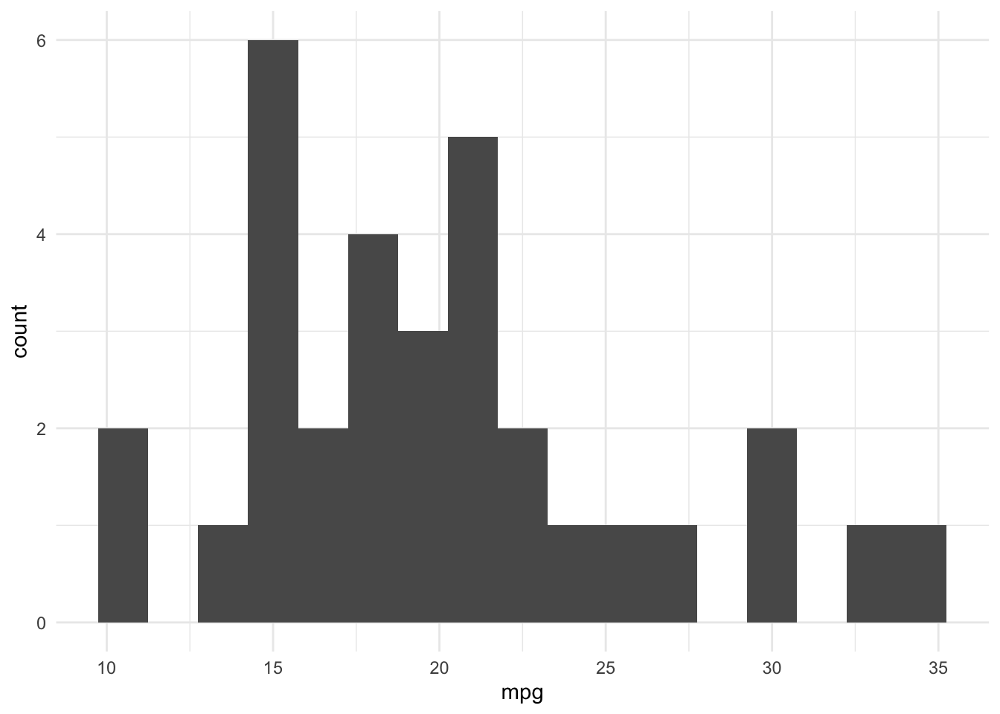
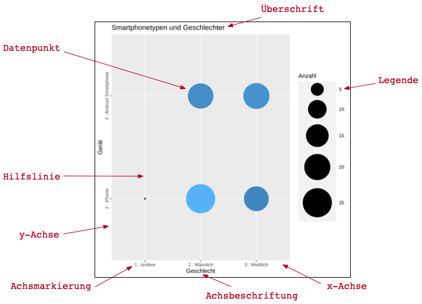
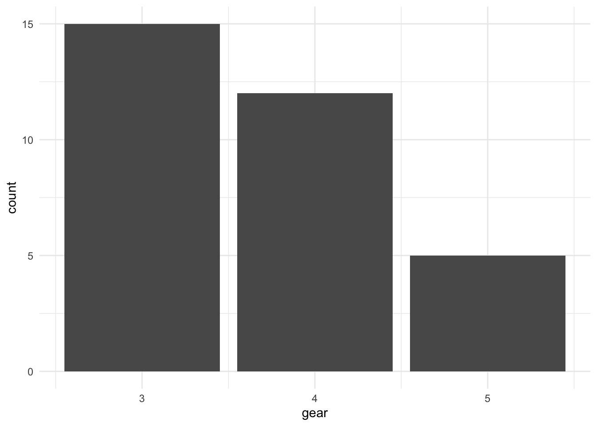
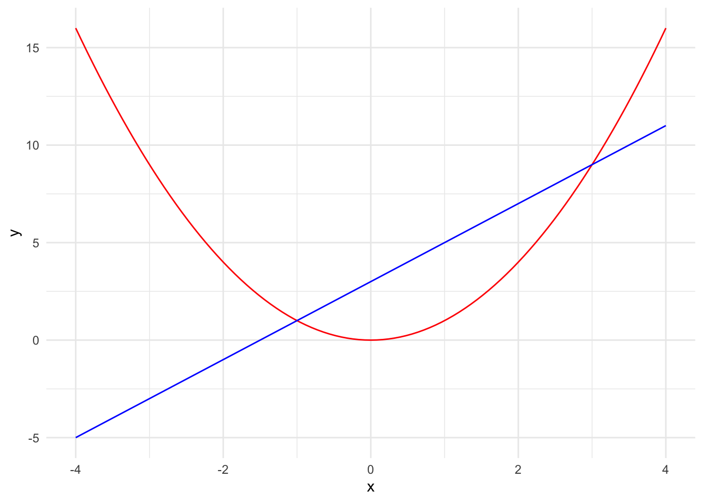
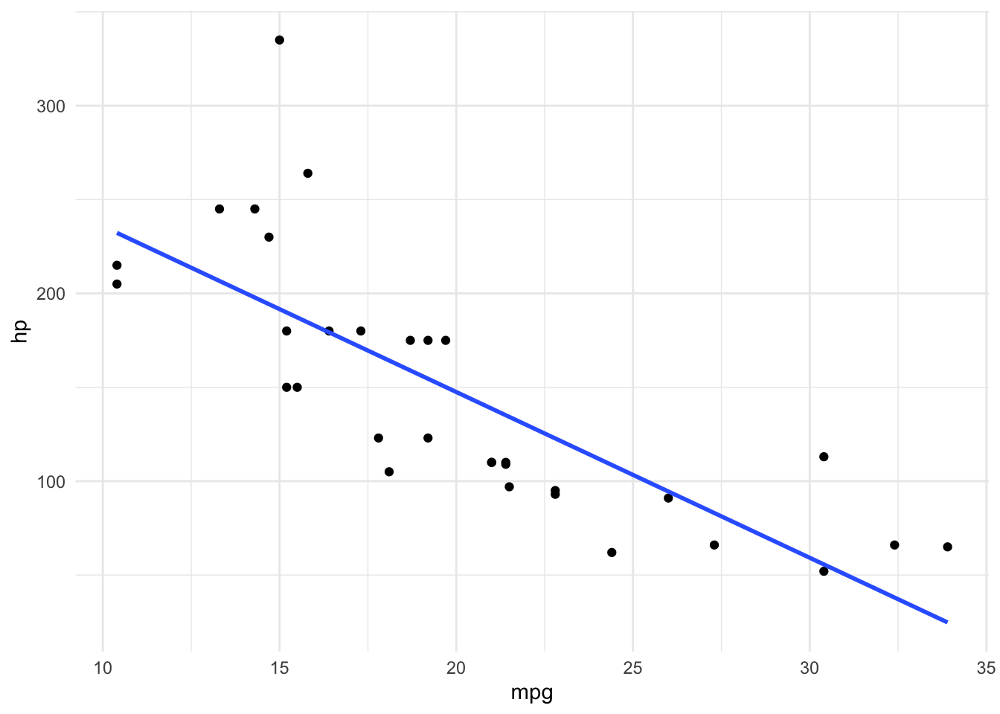
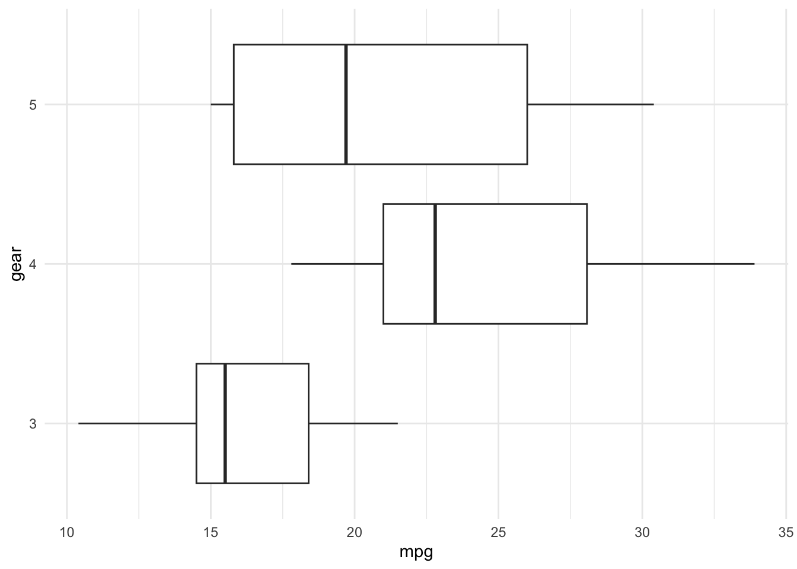
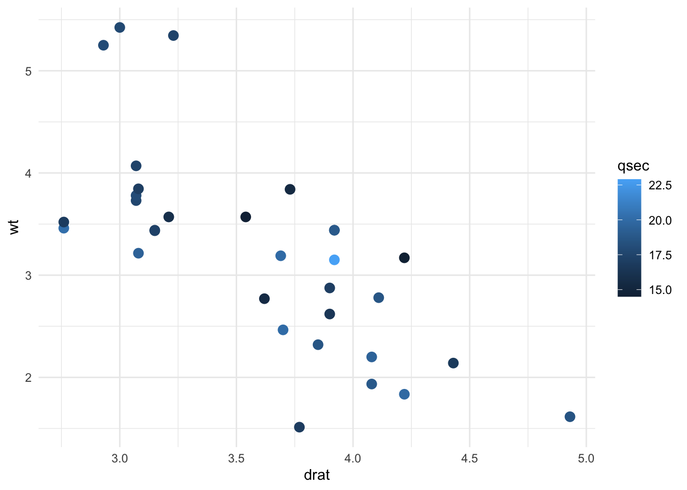
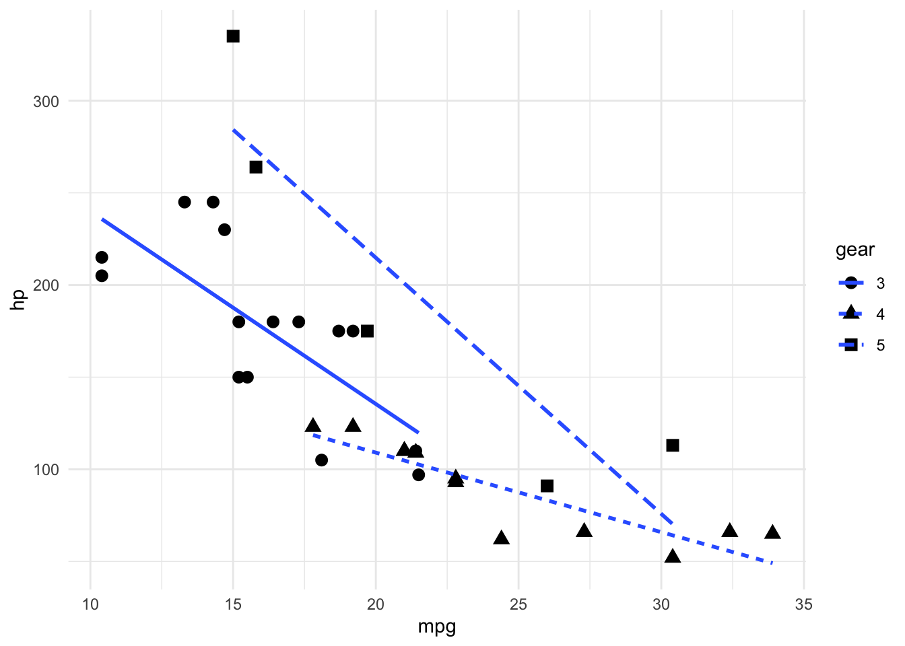

19 Daten visualisieren
Die Datenvisualisierung ist ein wichtiges Werkzeug für die Datenanalyse. Die Datenvisualisierung hilft Systematiken zu erkennen, Beziehungen zu verstehen und Strukturen zu erfassen, die in strukturierten Daten nicht direkt nachvollzogen werden können. Sie ist ein wesentliches Instrument für die Kommunikation von Daten, weil sich graphische Darstellungen leichter erfassen lassen als strukturierte Daten.
Merke
Die Datenvisualisierung ist ein Hilfsmittel zur Analyse und zur Kommunikation. Sie ist kein Selbstzweck und stellt keine Analyse dar. Die Datenvisualisierung kann helfen, Daten vor einer weiterführenden Analyse zu verstehen.
Die Datenvisualisierung kann Informationstheoretisch betrachtet werden. Dabei werden die Werte visuell kodiert. Dieser Vorgang folgt den gleichen informationstheoretischen Prinzipien wie die Datenverarbeitung. Entsprechend muss die Datenvisualisierung als eine Form der Informationskodierung verstanden werden. Aus dieser Einsicht folgt konsequent, dass Information bei der Visualisierung zwangsläufig durch Rauschen und Equivokation verloren geht. Gleichzeitig müssen Visualisierungen nicht nur erstellt sondern auch gelesen und systematisch interpretiert werden. Bei wissenschaftlichen Visualisierungen werden spezielle visuelle Codes verwendet, um Werte und ihre Beziehungen zueinander sichtbar zu machen.
Künstlerische Freiheit
Bei der Datenvisualisierung sollten ästhetische Elemente ohne Bezug zu den Daten vermieden werden, wenn sie das Dekodieren behindern.
19.1 Aufbau eines Diagramms
Eine Visualisierung ist in ein Diagramm eingebettet. Ein Diagramm enthält meist mehr Elemente als die eigentliche Visualisierung. Abbildung 19.1 zeigt die wichtigsten Elemente eines Diagramms.
Jedes Diagramm umfasst den Darstellungsbereich mit den Datenpunkten (s. Definition 6.5), Achsen für die Hauptdimensionen mit Achsmarkierungen für die Position ausgewählter Werte im Wertebereich der Dimension und Achsbeschriftungen, die die Hauptdimensionen kennzeichnen.
Komplexe Diagramme erfordern zusätzlich eine Legende für jede dargestellte Nebendimension.
Optional können Visualisierungen mit einer erklärenden Überschrift versehen werden. Ebenfalls optional sind Hilfslinien, die die Orientierung im Wertebereich der Hauptdimensionen erleichtern.

19.1.1 Haupt- und Nebendimensionen
Für eine Visualisierung müssen immer zuerst die darzustellenden Merkmale ausgewählt werden.
Definition 19.1 Eine Dimension eines Diagramms entspricht einem dargestellten Merkmal der verwendeten Stichprobe.
Warnung
Die Merkmale aus unterschiedlichen Stichproben dürfen beim Visualisieren nicht gemischt werden!
Beim Visualisieren werden Haupt- und Nebendimensionen unterschieden.
Definition 19.2 Eine Hauptdimension eines Diagramms bildet den Wertebereich eines Merkmals als eine horizontale oder vertikale Länge ab.
Die Hauptdimensionen legen die Position der Datenpunkte in der Visualisierung fest.
Jede Visualisierung hat mindestens eine Hauptdimension.
Definition 19.3 Nebendimensionen eines Diagramms bilden den Wertebereich eines Merkmals als visuelle Eigenschaften von Datenpunkten ab.
Visuelle Eigenschaften können Grösse, Form oder Farbe von Datenpunkte sein.
Nebendimensionen werden nicht in allen Diagrammen verwendet.
19.1.2 Darstellungsbereich
Der Darstellungsbereich enthält die eigentliche Visualisierung der Datenpunkte. Dieser Bereich muss für eine korrekte Darstellung alle gemessenen Werte, aber nicht zwingend den gesamten Wertebereich umfassen. Deshalb ist es nicht erlaubt, das Achsintervall des Darstellungsbereich so zu verändern, dass einzelne Werte nicht mehr dargestellt werden.
Der Darstellungsbereich wird durch die Hauptdimensionen der Visualisierung aufgespannt.
19.1.3 Achsen
Die Achsen markieren die Hauptdimensionen eines Diagramms. Es sollten nicht mehr als zwei Hauptdimensionen in einem Diagramm verwendet werden, weil sich aus der Darstellung nicht mehr erkennen lässt, welche Achse zu welchen visuellen Elementen grhört.
Die horizontale Achse wird per Konvention x-Achse und die vertikale Achse y-Achse genannt.
Achsen sollten mit den wichtigsten Werten an Achsmarkierungen beschriftet werden und müssen eine aussagekräftige Achsbeschriftung haben. Die meisten Analyseumgebungen übernehmen standardmässig den Titel des Datenvektors.
Für nominalskalierte Wertebereiche müssen alle dargestellten Werte über eine Achsmarkierung beschriftet werden. Bei sehr vielen Werten kann es vorkommen, dass diese Markierungen unleserlich werden. In diesem Fall sollten die Werte alphabetisch oder nummerisch sortiert werden und nur markannte Werte (z.B. jeden fünften Wert) hervorgehoben werden. In diesem Fall muss auf den vollständigen Wertebereich verwiesen werden, damit die Datenpunkte eindeutig identifiziert werden können.
Bei ordinalskalierten Wertebereichen müssen die Extreme des Wertebereichs beschriftet werden. Gegebenenfalls sollte auch der Mittelpunkt des Wertebereichs auf der Achse beschriftet werden.
Bei kontinuierlichen Wertebereichen sollten Werte in regelmässigen Abständen markiert und beschriftet werden. Diese genauen Abstände hängen vom Umfang des dargestellten Intervalls ab.
19.1.4 Titel
Der Diagrammtitel ist ein aussagekräftiger Titel über den Inhalt eines Diagramms.
Praxis
Der Diagrammtitel wird oft nicht in ein Diagramm aufgenommen, sondern erst später als Abbildungstitel hinzugefügt.
19.1.5 Legende
Eine Legende beschreibt die Wertebereiche der Nebendimensionen einer Visualisierung. Ohne eine Legende lassen sich zusätzliche Kodierungen nicht nachvollziehen und dekodieren. Ein Diagramm muss eine Legende haben, sobald Nebendimensionen abgebildet sind. Fehlt eine Legende sind zusätzliche grafische Elemente als künstlerische Ergänzung ohne inhaltlichen Wert zu interpretieren.
19.2 Plots mit einer Variablen
19.2.1 Histogramme
Definition 19.4 Ein Histogramm zeigt die Häufigkeiten einer Variablen mithilfe von Balken an. Umgangssprachlich werden Histogramme auch als Balkendiagramme bezeichnet.
Die Höhe der Balken entspricht der Häufigkeit der Werte. Ein Histogramm macht die Verteilung einer Variable sichtbar.
- Bei kontinuierlich-skalierten Variablen werden die Werte zu Intervallen zusammengefasst. Die Häufigkeit bezieht sich dann auf Anzahl der Werte im entsprechenden Intervall. Die Breite des Balkens entspricht dann der Breite des Intervalls.
- Bei diskret-skalierten Variablen wird jeder Wert durch einen eigenen Balken repräsentiert. Die Häufigkeit der Werte bezieht sich dann auf die einzelnen Werte. Die Breite der Balken ist dann beliebig.

Die Reihenfolge der Balken ist nicht beliebig. Die Balken werden für alle ordinalskalierten Wertebereiche in der Reihenfolge der Werte bzw. der Intervalle angeordnet. Nominalskalierte Wertebereiche haben keine natürliche Reihenfolgen. Deshalb werden die Balken eines Histogramms für nominalskalierte Wertebereiche in der Reihenfolge der Häufigkeiten angeordnet.
Eine Sonderform eines Histogramms ist das sog. Kreis- bzw. Tortendiagramm. Ein Tortendiagramm ist ein Histogramm, bei dem die Balken durch Kreissegmente ersetzt werden. Die Grösse der Kreissegmente entspricht dem Anteil der Häufigkeit an der Gesamthäufigkeit.
Merke
Ein Histogramm ist einem Kreisdiagramm immer vorzuziehen. Kreisdiagramme sollten nur verwendet werden, wenn wenige Kreissegmente vorhanden sind. Dabei sollten entweder ein Kreissegment besonders hervorstechen oder alle Segmente ungefährt gleichverteilt sein.
19.2.2 Boxplot
Definition 19.5 Ein Boxplot stellt die Grösse der Verteilungsintervalle von Daten als Rechteck und Linien dar. Aussergewöhneliche Werte (Ausreisser) werden als Punkte dargestellt.
Box-Whisker-Diagramm und Kastengrafik sind gebräuchliche Synonyme für Boxplots.
Merke
Boxplots dürfen nur für ordinal- oder kontinuierlichskalierte Wertebereiche verwendet werden.
Ein Boxplot hat nur eine Achse für den Wertebereich der dargestellten Werte. Die zweite Achse in einem einfachen Boxplot ist nur notwendig, um das Rechteck zeichnen zu können und hat sonst keine Bedeutung.
Ein Boxplot gliedert die vorliegenden Daten in vier gleichgrosse Bereiche. Diese Bereiche heisse Quartile. Jedes Quartil umfasst jeweils ein Viertel der Werte. Die beiden mittleren Quartile werden als zwei Rechtecke dargestellt. Die Länge der beiden Rechtecke heisst Interquartilsabstand. Die Linie die am Übergang zwischen den beiden Rechtecken entsteht markiert den Median der Verteilung. Ausreisser sind Werte, die um mehr als das 1.5-fache des Interquartilsabstands von der nächsten Quartilsgrenze entfernt sind.

Weil ein Boxplot die Werte in gleichgrosse Intervalle gliedert, geben sie eine grobe Orientierung über die Verteilung der Werte.
19.2.3 Dichtediagramme
Boxplots und Histogramme fassen die Werte immer zu Intervallen zusammen. Dadurch lässt sich die genaue Verteilung der Daten nicht genau nachvollziehen. Bei kontinuierlichen Wertebereichen zeichen die Intervalle nicht immer ein akkurates Bild der Verteilung. Eine detailliertere Annäherung als ein Histogramm liefert die Dichtefunktion einer Verteilung.
Die Dichtefunktion liefert die Wahrscheinlichkeiten, mit der Werte in einer Verteilung auftreten, als eine stetige Funktion von Wahrscheinlichkeitswerten. Weil nicht alle Werte in den Daten vorkommen, ist die Dichtefunktion eine Annäherung an die wahrscheinlichste Verteilung der dargestellten Werte.
Definition 19.6 Dichtediagramme sind eine Visualisierung der Dichtefunktion einer Verteilung und zeigen die Wahrscheinlichkeiten mit denen Werte eines kontinuierlichen Wertebereichs in einer Verteilung vorkommen.
Merke
Dichtediagramme sind nur für kontinuierliche Wertebereiche erlaubt.

19.2.4 Violindiagramm
Ein Violindiagramm verbindet die Idee des Box-Plots mit der Dichtefunktion. Für kontinuierliche Wertebereiche zeigen Violindiagramm mehr Details als ein Boxplot.
Merke
Violindiagramme verwenden die Annäherung der Dichtefunktion für die Visualisierung. Entsprechend werden auch nicht gemessene Werte abgebildet.

Die zweite Achse eines Violindiagramms hat keine Bedeutung, sondern dient nur der Darstellung der Dichtefunktion. Hierbei ist zu beachten, dass die Kurve der Dichtefunktion gespiegelt ist. Deshalb sollten Violindiagramme nie als Grundlage für eine Schnellanalyse dienen, weil die Flächen leicht falsch interpretiert werden können.
19.3 Plots mit zwei Variablen
19.3.1 Funktionsdiagramme
Definition 19.7 Ein Funktionsdiagramm stellt die Parameter und die Ergebnisse einer oder mehrerer (mathematischer) Funktionen gegenüber.
In Funktionsdiagrammen werden die Parameter einer Funktion ihren Ergebnissen gegenübergestellt. Zwischen diesen Werten gibt es eine Beziehung, die durch die verwendete Funktion festgelegt wird.
Definition 19.8 Die Parametern und den Ergebnissen eine Funktion sind funktional abhängig. Für den Spezialfall einer linearen Funktion sind die Werte linear ahbängig.
Funktionsdiagramme visualisieren also die funktionale Abhängigkeit zwischen Parametern und Ergenissen von Funktionen.
Für ein Funktionsdiagramm wird neben der Funktion zusätzlich ein Parameterintervall benötigt. Das Parameterintervall bildet die Grundlage für den Darstellungsbereich. Anschliessend wird eine Wertetabelle für das Parameterintervall erstellt. Diese Tabelle enthält zwei Vektoren:
- Eine Sequenz (s Kapitel 13.1) zwischen der Unter- und der Obergrenze des Parameterintervalls.
- Die Funktionsergebnisse für alle Werte gewählten Parameterintervall.
Praxis
Viele Visualisierungsumgebungen erstellen die Wertetabelle automatich vor der Visualisierung einer Funktion.

Bei der Datenvisualisierung werden Funktionsdiagramme zur Vorhersage oder zum Vergleich der Werte eines Vektors durch die Werte eines anderen Vektors verwendet.
Definition 19.9 Ein Modell ist eine Funktion, die eine Beziehung zwischen Variablen als funktionale Anhängigkeit beschreibt.
19.3.2 Beziehungen
Werden die Werte von zwei Variablen gegenübergestellt, dann wird die Beziehung zwischen den Variablen sichtbar.
Achtung
Gelegentlich werden Beziehungen zwischen Variablen mit Balken dargestellt. Diese Darstellung ist unzulässt. Balken sollten ausschliesslich zur Darstellung von Häufigkeiten verwendet werden.
Beziehungen zwischen Variablen können auf verschiedene Arten dargestellt werden.
19.3.2.1 Streudiagramme
Normalerweise werden Beziehungen zwischen zwei Variablen mit einem sog. Streudiagramm dargestellt.
Ein Streudiagramm stellt die Werte aus zwei Variablen als Punkte dar. Umgangssprachlich werden Streudiagramme als Punktdiagramme bezeichnet.
Die Werte der ersten Variablen werden z.B. auf der x-Achse abgetragen, die Werte der zweiten Variablen auf der y-Achse. Die Punkte werden dann an der entsprechenden Stelle im Koordinatensystem dargestellt. Die Wahl der Achse ist beliebig.

19.3.2.2 Jitter-Diagramme
Wenn beide Variablen diskrete Wertebereiche haben, haben die Punkte im Streudiagramm die Tendenz, dass sich die Punkte zu überlagern, weil es nur eine begrenzte Anzahl möglichen Wertepaaren gibt. Um dieses Problem zu umgehen, wird eine besondere Variante des Streudiagramms eingesetzt: Das sog. Jitter-Diagramm (etwa Zitterdiagramm). Ein Jitter-Diagramm ist eine Variante von Streudiagrammen.

Bei einem Jitter-Diagramm wird um die diskreten Werte ein Bereich festgelegt. Der eigentliche Wert liegt im Mittelpunkt dieses Bereichs. Für jeden Messpunkt, wird ein Punkte zufällig innerhalb dieses Bereichs markiert. Durch diese zufällige Positionierung entsteht der Eindruck einer zittrigen Hand.
Durch das zufällige Positionieren werden die Punkte aufgelockert und die Beziehung der Variablen wird sichtbar. Die Grösse des Bereichs wird so gewählt, dass sich mehrere Bereiche nicht überlappen.

Praxis
Bei der Grösse des Jitter-Bereichs sollte etwas Abstand zu den umgebenden Bereichen gelassen werden. Dadurcht entsteht ein Leerraum, welcher keine Punkte enthält, so lassen sich die einzelnen Bereiche optisch leichter voneinander abgrenzen.
Beim Lesen eines Jitter-Diagramm muss beachtet werden, dass der Bereich für die Punkte dem zugehörigen diskreten Wert entspricht. Durch die Anordnung der Punkte in einem Jitter-Diagramm kann der Eindruck einer Beziehung zwischen zwei Variablen visuell entstehen, ohne dass diese Beziehung tatsächlich existiert.
19.3.2.3 Liniendiagramme
Definition 19.10 Ein Liniendiagramm eine Variante eines Streudiagramms, bei dem aufeinanderfolgende Punkte durch eine Linie verbunden werden.
Liniendiagramme werden verwendet, wenn die Werte einer Variablen in einer bestimmten Reihenfolge zueinander stehen. Die Werte werden dann auf der entsprechenden Achse in der entsprechenden Reihenfolge abgetragen. Die Punkte werden dann durch eine Linie verbunden.
Liniendiagramme werden häufig verwendet, um die Entwicklung von Variablen über die Zeit darzustellen.

Achtung
Wenn die Werte einer Variablen nicht in einer festen Reihenfolge zueinander stehen, dann dürfen die Werte nicht durch eine Linie verbunden werden! In diesem Fall muss ein Streudiagramm verwendet werden.
19.3.3 Ausgleichsgeraden
Definition 19.11 Eine Ausgleichsgerade ist ein Funktionsdiagramm einer Funktion, welche die Ergebnisse einer linearen Funktion zu den tatsächlichen Werten minimiert.
Ausgleichsgeraden verwenden lineare Funktionen in der Form ax + c. Die Funktion einer Ausgleichsgeraden minimiert die Funktionsergebnisse mit den tatsächlichen Werten.
Eine Ausgleichsgerade darf nicht willkürlich gezogen werden, sondern muss aus den gemessenen Werten ermittelt werden. Eine Ausgleichsgerade sollte immer gemeinsam mit den tatsächlichen Werten der Variablen dargestellt werden.
Die Funktion einer Ausgleichsgeraden ist ein einfaches Modell für die gefundenen Daten. Die Beziehung zwischen den Variablen wird in diesem Modell als lineare Abhängigkeit abgebildet.

19.3.4 Zwei unterschiedliche Skalenniveaus kombinieren
Sollen die Werte einer Variable mit diskreten Wertebereich gegen die Werte einer Variablen mit kontinuierlichem Wertebereich abgetragen werden, dann werden die Verteilungen der kontinuierlichen Variablen für die einzelnen Werte eines diskreten Wertebereichs dargestellt. Hierzu werden meist Boxplots oder Violindiagramme verwendet.
Diese Form von kombinierten Diagrammen tritt sehr häufig in Verbindung mit Sekundärindizes auf. Dabei werden Verteilungen von gruppierten Werten gegenübergestellt.

19.4 Plots mit mehr als zwei Variablen
Plots sind auf zwei Dimensionen beschränkt. Werden mehr als zwei Variablen dargestellt, dann werden die zusätzlichen Variablen durch verschiedene Darstellungsformen repräsentiert. 3D-Koordinatensysteme sollten vermieden werden, weil die Position der Punkte bei der 2D-Darstellung eines 3D-Koordinatensystems mehrdeutig ist und sich schwer interpretieren lässt.
Für Beziehungen zwischen mehr als zwei Variablen muss für die zusätzlichen Variablen eine andere Darstellungsform gewählt werden. Die wichtigsten Darstellungsformen sind:
- Farbliche Kodierung
- Grössenkodierung
- Form-Kodierung
Diese Varianten können kombiniert werden, um zusätzliche Daten in eine Visualisierungzu integrieren.
Wichtig
Alle zusätzlichen Kodierungen müssen in einer Legende erklärt werden.
19.4.1 Farbliche Kodierung
Bei der farblichen Kodierung werden die dargestellten Werte in Farben oder Farbtöne übersetzt.
Bei diskreten Wertebereichen sollten für die farbliche Kodierung Farben bzw. Farbtöne verwendet werden, die sich voneinander unterscheiden lassen.
Hinweis
Die farblichen Kodierung sollte sparsam eingesetzt werden, weil die menschliche Farbwahrnehmung stark variiert. Eine vermeintlich gut gewählter Farbton lässt möglicherweise von den Adressaten einer Visualisierung nicht von anderen verwendeten Farben unterscheinde. Dadurch kann die Darstellung nicht wie vorgesehen dekodiert werden.
19.4.1.1 Farbliche Kodierung von diskreten Wertebereichen
Bei diskreten Wertebereichen werden Farben verwendet, die einen möglichst grossen Kontrast zueinander haben.
Hinweis
Diskrete Farben können Menschen nicht beliebig voneinander unterscheiden. Deshalb sollten der Wertebereich einer so kodierter Daten klein sein.

19.4.1.2 Farbliche Kodierung von kontinuierlichen Wertebereichen
Kontinuierliche Wertebereiche werden als sog. Farbgradienten (bzw. Farbverlauf) zwischen zwei Farben kodiert.
Bei Wertebereichen mit einem definierten Mittelpunkt, wird dieser oft mit einem Übergang über weiss dargestellt. In diesem Fall hat der Gradient 3 Farben. Daraus ergibt sich, dass je heller ein Farbton ist, desto näher ist der Wert am Mittelpunkt. Je nach Färbung ist dann ersichtlich, ob ein Wert ober- oder unterhalb des Mittelpunkts liegt.
Farbgradienten haben den Nachteil, dass die meisten Menschen farbliche Unterschiede nicht stufenlos unterscheiden können. Deshalb sollten Farbgradienten nur verwendet werden, wenn die exakten Werte für die Visualisierung von untergeordneter Rolle sind.

19.4.2 Grössenkodierung
Bei der Grössenkodierung werden die Punkte von Streudiagrammen entsprechend eines dritten Werts vergrössert oder verkleinert.
Hinweis
Eine Grössenkodierung eigent sich gut für kontinuierliche Wertebereiche. Obwohl sich ordinalskalierte Wertebereiche ebenfalls so darstellen lassen, sollte das möglichst vermieden werden, weil bei dieser Darstellungsform verborgen wird, dass es sich um diskrete Daten handelt.

Definition 19.12 Ein Bubble-Chart oder Ballondiagramm ist ein Streudiagramm mit zusätzlichen grössenkodierten Werten.
19.4.3 Form-Kodierung
Über die Form von Punkten oder Linien können zuätzliche Werte in Diagrammen abgebildet werden. Formen eignen sich nur für diskrete Wertebereiche.
Normalerweise wird die Kodierung für Punkte oder für Linien verwendet.
Hinweis
Bei der Formkodierung muss auf die Mindestgrösse geachtet werden, weil sehr kleine Formen nur schwer voneinander unterscheidbar sind.

19.4.4 Teildiagramme
Mit Teildiagrammen werden die Werte entlang einer Variablen in Daten-Segmente getrennt und anschliessend werden die die restlichen Variablen für jedes Segment einzeln visualisiert. Diese Teildiagramme heissen Facetten.
Solche Facetten können nur mithilfe diskreter Daten gebildet werden. Jede Facette muss eine Überschrift haben, die den Wert der Nebendimension zeigt, der die dargestellten Datenpunkte zusammenfasst.

Teildiagramme haben den Nachteil, dass die Daten über verschiedene Diagramme verteilt dargestellt werden. Das erschwert den direkten Vergleich der dargestellten Werte. Deshalb sollten Teildiagramme gewählt werden, wenn durch die isolierte Darstellung bestimmte Aspekte einer Analyse besser hervorgehoben werden. Dazu gehören beispielsweise Beziehungen von Variablen in Gruppen, die mit trotz visueller Kodierungen leicht übersehen werden können.